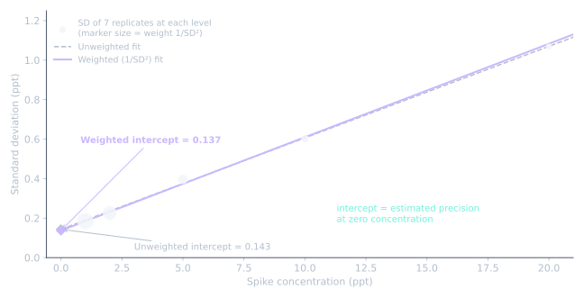

이 글에 관해: SEMI C10은 저작권이 있는 유료 표준입니다. 이 글은 그 개념을 제 말로 설명할 뿐, 원문·표·공식을 옮기지 않습니다. 적용하려면 SEMI에서 최신판을 구입하세요.
왜 중요한가
반도체 공정 케미컬과 가스에서 미량 금속·음이온 규격은 ppb, ppt 수준으로 정해집니다. 공급사가 규격을 만족하는지는 분석법이 그만큼 낮게 볼 수 있는지에 달려 있으므로, 결과 뒤의 MDL이 결과만큼 중요합니다. SEMI C10은 업계가 이를 위해 쓰는 가이드입니다.
제목: SEMI C10, Guide for Determination of Method Detection Limits
SEMI가 공개적으로 밝힌 내용
- 목적: SEMI 공정 케미컬·가스 규격을 뒷받침하는 데이터에 대해, MDL을 정량적으로 정하는 최소한의 지침.
- 범위: SEMI 공정 케미컬·가스 표준에 명시된 미량 오염물. 해당 오염물마다 회귀 분석으로 구한 MDL이 있어야 하고, 그 값이 규격 이하여야 합니다.
- 용도: 새 규격 설정과 기존 규격 대비 성능 확인 모두.
- 현행판: SEMI C10-1109 (Reapproved 1114). 1998년 첫 발행, 이전 판 C10-0299, C10-0305. Liquid Chemicals Global Technical Committee가 관리. SEMI C16, Guide for Precision Reporting / Data Traceability를 참조.
핵심 차이: 한 수준이 아니라 여러 수준
EPA MDL(2편)은 한 스파이크 수준의 반복 측정을 씁니다. 결과는 그 선택 하나에 좌우되고, 농도에 따라 정밀도가 어떻게 변하는지는 알려 주지 않습니다.
SEMI C10은 대신 다수준 관점을 취합니다. 개념적으로는 여러 저농도에서 정밀도가 어떻게 변하는지 보고, 그 추세를 농도 0까지 따라가, 0에서 예상되는 정밀도로 MDL을 정합니다. 정확한 절차는 표준에 있습니다.
왜 가중치인가
미량 수준에서는 보통 농도가 높을수록 흩어짐이 커집니다. 20 ppt 반복값은 1 ppt 반복값보다 더 퍼집니다. 가중치 없는 단순 적합에서는 0에 가까운 점들이 0에서의 정밀도를 가장 잘 말해 주는데도, 잡음 많은 고농도 점이 정밀한 저농도 점만큼 추세선을 끌어당깁니다.
가중치는 정밀한 저농도 점에 더 큰 발언권을 줘서 이를 바로잡습니다. JMP 통계 글은 SEMI C10이 가중 최소제곱을 권장한다고 적고 있습니다.
개념을 그림 한 장으로
이 그림은 다수준·가중 회귀라는 일반 개념을 가상 데이터로 보인 것입니다. SEMI C10 절차를 옮긴 것이 아니라 제가 만든 예시입니다.

가상 데이터: 1, 2, 5, 10, 20 ppt에서 각 7회 반복. 실제 데이터 없음.
읽는 법
- 점: 각 수준 7회 반복의 표준편차. 점이 클수록 가중 적합에서 가중치가 큽니다(가중치 = 1 / SD²). 1, 2 ppt가 지배합니다.
- 회색 점선: 비가중 적합. 절편 s₀ = 0.143 ppt.
- 청록 선: 가중 적합. 절편 s₀ = 0.137 ppt.
- 0의 마름모: 각 추세선이 농도 0과 만나는 곳, 즉 아무것도 없는 시료의 추정 정밀도.
이 예시에서는 데이터가 깨끗한 직선을 따라서 두 절편이 비슷합니다. 한두 수준이 추세보다 잡음이 큰 실제 데이터에서는 훨씬 크게 달라질 수 있고, 가중 적합은 답을 저농도 점에 붙잡아 둡니다.
그림을 직접 만들려면: python make_figure.py (numpy, matplotlib 필요).
셋을 비교하면
| Currie 1968 (1편) | EPA MDL (2편) | SEMI C10 | |
|---|---|---|---|
| 근거 | 블랭크 표준편차 | 한 스파이크 수준의 반복값, 2017년부터 블랭크 추가 | 여러 수준의 정밀도 추세를 0까지 연장 |
| 통계 | 정규분포, α와 β 모두 관리 | 단측 99% Student's t | 가중 회귀 |
| 주요 약점 | 일상 업무에 바로 쓰기 어려움 | 선택한 스파이크 수준에 좌우 | 가중치를 어떻게 정하느냐에 결과가 좌우 |
| 주 용도 | 과학적 틀 | 미국 폐수 규제 | 반도체 케미컬·가스 규격 |
| 접근 | 공개 논문 | 무료(미국 연방 규정) | 유료 표준 |
같은 장비와 분석법으로도 세 가지 다른 "MDL"이 나올 수 있습니다. 성적서의 숫자는 어떤 정의를 썼는지 밝히지 않으면 별 의미가 없습니다.
실무 정리
- 모든 MDL에 정의를 적으세요. "MDL = 2 ppt"보다 "SEMI C10-1109 기준 다수준 MDL"이 훨씬 많은 것을 말해 줍니다.
- 저농도 수준을 확인하세요. 가중 적합에서는 가장 낮은 수준이 답을 좌우합니다. 그 반복값이 나쁘면 MDL도 나쁩니다.
- 가중치를 확인하세요. JMP 글은 신호 검량선을 분산의 역수로 가중하면 비현실적으로 작은 검출한계가 나올 수 있음을 보여 줍니다. 가중치는 선택이므로 밝혀야 합니다.
- 블랭크는 여전히 중요합니다. 0까지 외삽한 회귀는 추정이지 블랭크 측정이 아닙니다. ppt 수준에서는 실제 블랭크도 확인하세요. 2편의 EPA 2017년 개정이 주는 교훈입니다.
이 글에 없는 것
- 절차 자체(단계, 공식, 계수, 수준·반복 수)는 표준 구매자만 볼 수 있으므로 일부러 뺐습니다.
- C10이 Currie의 틀에 기반하는지에 대한 SEMI의 공개 입장은 찾지 못했습니다.
이 글은 표준이 시작되는 곳에서 멈춥니다. 고순도 케미컬에서 검출한계를 다루고 계시다면, 그 주변 실무에 관해 이야기 나누고 싶습니다.
이 글을 만든 방법
SEMI C10은 라이선스 구매자에게만 판매되므로, 이 글은 개념과 공개된 사실 수준에 머뭅니다. AI 도우미(Claude)로 공개 사실(판, 범위, 이력)을 SEMI 자체 페이지와 대조하고, 가상 데이터로 그림을 만들고, 표준의 절차 세부가 글에 들어가지 않도록 점검했습니다.
참고문헌
- SEMI, SEMI C10 product page.
- SEMI, Determining the Detection Limit — SEMI C10 (SEMICON West 2022 workshop).
- JMP User Community, Estimation of a Limit of Detection.